주택관리사보-2차 (2016-10-15 기출문제)
1과목: 주택관리관계법규
1. 주택법령상 주택상환사채에 관한 설명으로 옳지 않은 것은?
- 등록사업자가 발행할 수 있는 주택상환사채의 규모는 최근 3년간의 연평균 주택건설 호수 이내로 한다.
- 주택상환사채의 상환기간은 3년을 초과할 수 없다.
- 주택상환사채의 납입금은 주택건설자재의 구입을 위해 사용할 수 있다.
- 주택상환사채는 해외이주 등 부득이한 사유가 있는 경우로서 국토교통부령이 정하는 경우를 제외하고는 양도하거나 중도에 해약할 수 없다.
- 주택상환사채의 납입금은 국토교통부장관이 지정하는 금융기관에서 관리한다.
(정답률: 알수없음)

2. 주택법령상 투기과열지구의 지정 및 해제에 관한 설명으로 옳지 않은 것은?
- 시ㆍ도지사는 주택가격의 안정을 위하여 필요한 경우에는 주거기본법에 따른 시ㆍ도 주거정책심의위원회의 심의를 거쳐 일정한 지역을 투기과열지구로 지정하거나 이를 해제할 수 있다.
- 투기과열지구를 지정하는 경우에는 그 지정 목적을 달성할 수 있는 최대한의 범위로 하여야 한다.
- 시ㆍ도지사는 투기과열지구를 지정하였을 때에는 지체 없이 이를 공고하고, 그 투기 과열지구를 관할하는 시장ㆍ군수ㆍ구청장에게 공고 내용을 통보하여야 한다.
- 국토교통부장관 또는 시ㆍ도지사는 투기과열지구에서 지정 사유가 없어졌다고 인정하는 경우에는 지체 없이 투기과열지구 지정을 해제하여야 한다.
- 국토교통부장관이 투기과열지구를 지정하거나 해제할 경우에는 시ㆍ도지사의 의견을 들어야 하며, 시ㆍ도지사가 투기과열지구를 지정하거나 해제할 경우에는 국토교통부장관과 협의하여야 한다.
(정답률: 알수없음)
3. 주택법령상 주택조합에 관한 설명으로 옳지 않은 것은?
- 리모델링주택조합의 조합원은 공동주택의 소유자, 복리시설의 소유자, 조합설립신청일 현재 해당 리모델링주택에 6개월 이상 거주한 임차인 중 주택조합의 설립에 동의한 자로 한다.
- 변경인가를 제외한 주택조합설립인가를 받으려는 자는 해당 주택건설대지의 100분의 80 이상에 해당하는 토지의 사용권원을 확보하여야 한다.
- 리모델링주택조합 설립에 동의한 자로부터 건축물을 취득한 자는 조합의 설립에 동의한 것으로 본다.
- 직장주택조합이 설립인가를 받은 후 결원이 발생하여 충원하는 경우 조합원 추가모집에 따른 주택조합의 변경인가신청은 사업계획승인신청일까지 하여야 한다.
- 지역주택조합이 조합원 탈퇴 등으로 적법한 절차에 의해 조합원을 추가모집하는 경우 조합원 자격요건 충족여부의 판단은 당해 주택조합의 설립인가신청일을 기준으로 한다.
(정답률: 알수없음)
4. 주택법령상 용어에 관한 설명으로 옳은 것은?
- "복리시설"이란 주택단지의 입주자 등의 생활복리를 위한 어린이 놀이터, 근린생활시설, 주차장, 관리사무소 등을 말한다.
- 주택단지 안의 기간시설인 가스시설ㆍ통신시설 및 지역난방시설은 간선시설에 포함된다.
- "세대구분형 공동주택"은 그 구분된 공간의 일부에 대하여 구분소유를 할 수 있는 주택이다.
- "도시형 생활주택"은 300세대 이상의 국민주택규모에 해당하는 주택으로서 대통령령으로 정하는 주택을 말한다.
- "건강친화형 주택"은 저에너지 건물 조성기술 등 대통령령으로 정하는 기술을 이용하여 에너지 사용량을 절감하도록 건설된 주택을 말한다.
(정답률: 알수없음)
5. 주택법령상 리모델링에 관한 설명으로 옳지 않은 것은?
- "세대수 증가형 리모델링"이란 각 세대의 증축 가능 면적을 합산한 면적의 범위에서 기존 세대수의 100분의 15 이내에서 세대수를 증가하는 증축 행위를 말한다.
- "수직증축형 리모델링"이란 건축물의 노후화 억제 또는 기능 향상 등을 위해 수직으로 증축하는 행위를 말한다.
- 증축형 리모델링을 하려는 자는 시장ㆍ군수ㆍ구청장에게 안전진단을 요청하여야 하며, 안전진단을 요청받은 시장ㆍ군수ㆍ구청장은 해당 건축물의 증축 가능 여부의 확인 등을 위하여 안전진단을 실시하여야 한다.
- 시장ㆍ군수ㆍ구청장이 세대수 증가형 리모델링(50세대 이상으로 세대수가 증가하는 경우)을 허가하려는 경우에는 기반시설에의 영향이나 도시ㆍ군관리계획과의 부합 여부 등에 대하여 시ㆍ군ㆍ구도시계획위원회의 심의를 거쳐야 한다.
- 수직증축형이 아닌 세대수 증가형 리모델링의 경우 리모델링의 대상이 되는 건축물의 신축 당시 구조도를 보유하고 있어야 한다.
(정답률: 알수없음)
6. 주택법령상 세대수가 증가되는 리모델링을 하는 경우 수립되어야 할 권리변동계획의 내용에 포함되지 않는 것은?
- 안전진단결과보고서
- 리모델링 전후의 대지 및 건축물의 권리변동 명세
- 사업비
- 조합원 외의 자에 대한 분양계획
- 리모델링과 관련한 권리 등에 대해 해당 시ㆍ도 또는 시ㆍ군의 조례로 정하는 사항
(정답률: 알수없음)
7. 주택법령상 공동주택의 관리주체가 수립해야 할 안전관리계획에 포함되지 않는 시설물은?
- 중앙집중식 난방시설
- 위험물 저장시설
- 주택 내 전기시설
- 소방시설
- 옥상 및 계단 등의 난간
(정답률: 알수없음)
8. 주택법령상 관리사무소장의 업무 등에 관한 설명으로 옳은 것은?
- 500세대 이하의 공동주택에는 주택관리사를 갈음하여 주택관리사보를 관리사무소장으로 배치할 수 있다.
- 관리사무소장은 그 배치 내용과 업무의 집행에 사용할 직인을 국토교통부장관에게 신고하여야 한다.
- 관리사무소장은 그 업무를 집행하면서 고의로 입주자에게 재산상의 손해를 입힌 경우에만 그 손해를 배상할 책임이 있다.
- 500세대 이상의 공동주택에 관리사무소장으로 배치된 주택관리사는 관리사무소장의 손해배상책임을 보장하기 위하여 5천만원을 보장하는 보증보험 또는 공제에 가입하거나 공탁하여야 한다.
- 관리사무소장으로 배치받은 주택관리사는 배치받은 날부터 2년 이내에 국토교통부령으로 정하는 바에 따라 시ㆍ도지사로부터 주택관리에 관한 교육을 받아야 한다.
(정답률: 알수없음)
9. 주택법령상 사업계획승인을 받아야 하는 경우가 아닌 것은?
- 건축법 시행령에 따른 한옥 50호 이상의 주택건설사업을 시행하는 경우
- 공동주택 중 아파트 리모델링의 경우 증가하는 세대수가 30세대 이상인 경우
- 준주거지역에서 300세대 미만의 주택과 주택 외의 시설을 동일 건축물로 건축하는 경우로서 해당 건축물의 연면적에 대한 주택연면적 합계의 비율이 90퍼센트 미만인 경우
- 세대별 주거전용면적이 30제곱미터 이상이고 해당 주택단지 진입도로의 폭이 6미터 이상인 도시형 생활주택 중 단지형 연립주택 50세대 이상의 주택건설사업을 시행하는 경우
- 1만제곱미터 이상의 대지조성사업을 시행하는 경우
(정답률: 알수없음)
10. 건축법령상 건축물의 구조와 재료에 관한 설명으로 옳은 것은? (단, 건축법 제3조에 따른 적용 제외는 고려하지 않음)
- 방화지구 안에 있더라도 도매시장의 용도로 쓰는 건축물로서 그 주요구조부가 불연재료로 된 건축물은 주요구조부와 외벽을 내화구조로 하지 않을 수 있다.
- 방화지구 안의 공작물로서 건축물의 지붕위에 설치되어 있는 모든 간판, 광고탑은 주요부를 난연(難燃)재료로 하여야 한다.
- 인접 대지경계선으로부터 직선거리 3미터에 이웃 주택의 내부가 보이는 창문을 설치하고자 한다면, 차면시설(遮面施設)을 설치하여야 한다.
- 출입이 가능한 옥상광장에 높이 1미터의 난간을 설치한 경우 건축법령에 저촉되지 아니한다.
- 5층 이상인 층을 식물원의 용도로 쓰는 경우에는 피난 용도로 쓸 수 있는 광장을 옥상에 설치하여야 한다.
(정답률: 알수없음)
11. 건축법령상 용어의 정의에 관한 설명으로 옳은 것은?
- "건축"이란 건축물을 신축ㆍ증축ㆍ재축하는 것을 말하며, 건축물을 이전하는 것은 건축에 해당하지 않는다.
- 건축물의 기능향상을 위하여 일부 증축하는 행위는 리모델링에 해당하나, 동일한 목적을 위한 대수선은 리모델링이 아니다.
- 현장 관리인을 두어 스스로 건축설비의 설치 공사를 하는 자는 건축주가 아니다.
- 층수가 30층 미만이고 높이가 120미터 이상인 건축물은 고층건축물에 해당한다.
- 기둥, 최하층 바닥, 보, 차양, 옥외 계단은 건축물의 주요구조부에 해당하지 않는다.
(정답률: 알수없음)
12. 건축법령상 건축물의 유지와 관리에 관한 설명으로 옳은 것을 모두 고른 것은?
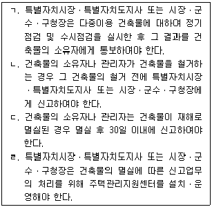
- ㄱ, ㄴ
- ㄱ, ㄷ
- ㄴ, ㄷ
- ㄴ, ㄹ
- ㄷ, ㄹ
(정답률: 알수없음)
13. 건축법령상 건축물의 대지와 도로에 관한 설명으로 옳은 것은? (단, 건축법 제3조에 따른 적용 제외는 고려하지 않음)
- 허가권자는 주민이 오랫동안 통행로로 이용하고 있는 사실상의 통로로서 해당 지방자치단체의 조례로 정한 경우에는 이해관계인의 동의와 건축위원회의 심의를 거쳐 도로로 지정하여야 한다.
- 국토의 계획 및 이용에 관한 법률에 따른 도시지역 외의 지역에서 도로의 교차각이 90°이며 해당 도로와 교차되는 도로의 너비가 각각 6미터라면 도로경계선의 교차점으로부터 도로경계선에 따라 각 3미터를 후퇴한 두 점을 연결한 선이 건축선이 된다.
- 도로면으로부터 높이 4.5미터 이하에 있는 출입구, 창문, 그 밖에 이와 유사한 구조물은 열고 닫을 때 건축선의 수직면을 넘는 구조로 할 수 있다.
- 건축물의 주변에 건축이 가능한 녹지가 있다면, 건축물의 대지가 2미터 미만으로 도로에 접하여도 건축법령을 위반한 것은 아니다.
- 건축물과 담장, 지표 아래의 창고시설은 건축선의 수직면을 넘어서는 아니 된다.
(정답률: 알수없음)
14. 민간임대주택에 관한 특별법령상 주택임대관리업에 관한 설명으로 옳지 않은 것은?
- 주택임대관리업을 등록하려는 자는 자기관리형 주택임대관리업과 위탁관리형 주택임대관리업을 구분하여 등록하여야 한다.
- 주택임대관리업을 등록한 자가 등록한 사항을 변경하거나 말소하고자 할 경우 국토교통부령으로 정하는 경미한 사항을 제외하고는 시장ㆍ군수ㆍ구청장에게 신고하여야 한다.
- 주택임대관리업의 등록이 말소된 후 3년이 지나지 아니한 자는 주택임대관리업의 등록을 할 수 없다.
- 시장ㆍ군수ㆍ구청장은 주택임대관리업자가 거짓이나 그 밖의 부정한 방법으로 등록을 한 경우에는 해당 주택임대관리업자의 등록을 말소하여야 한다.
- 주택임대관리업자는 분기마다 그 분기가 끝나는 달의 다음 달 말일까지 자본금, 전문인력, 관리 호수 등 대통령령으로 정하는 정보를 시장ㆍ군수ㆍ구청장에게 신고하여야 한다.
(정답률: 알수없음)
15. 소방기본법령상 과태료 부과에 관한 설명으로 옳은 것은?
- 위력(威力)을 사용하여 출동한 소방대의 화재진압을 방해한 경우 200만원 이하의 과태료 부과대상이다.
- 목조건물이 밀집한 지역에서 화재로 오인할 만한 우려가 있는 불을 피우고도 관할 소방본부장 또는 소방서장에게 신고하지 아니하여 소방자동차를 출동하게 한 경우 20만원 이하의 과태료 부과대상이다.
- 출동한 소방대원에게 폭행 또는 협박을 행사하여 화재진압ㆍ인명구조 또는 구급활동을 방해한 경우 500만원 이하의 과태료 부과대상이다.
- 관계 공무원이 화재조사를 수행하면서 알게 된 비밀을 다른 사람에게 누설한 경우 200만원 이하의 과태료 부과대상이다.
- 화재경계지구 안의 소방대상물에 대한 소방특별조사를 거부ㆍ방해 또는 기피한 경우 200만원 이하의 과태료 부과대상이다.
(정답률: 알수없음)
16. 소방기본법령상 내용에 관한 설명으로 옳은 것은?
- 소방대상물의 점유자는 관계인에 포함되지 아니한다.
- 행정자치부장관은 소방업무에 필요한 기본계획을 5년마다 수립ㆍ시행하여야 한다.
- 수도법에 따라 소화전을 설치하는 일반수도사업자는 관할 소방서장과 사전협의를 거친 후 소화전을 설치하여야 한다.
- 관할 소방서장은 시장지역 중 화재가 발생할 우려가 높거나 화재가 발생한 경우 그로 인하여 피해가 클 것으로 예상되는 지역을 화재경계지구로 지정할 수 있다.
- 한국소방안전협회가 정관을 변경하려면 관할 시ㆍ도지사의 인가를 받아야 한다.
(정답률: 알수없음)
17. 시설물의 안전관리에 관한 특별법령상 내용에 관한 설명으로 옳지 않은 것은?
- "1종시설물"이란 교량ㆍ터널ㆍ항만ㆍ댐ㆍ건축물 등 공중의 이용편의와 안전을 도모하기 위하여 특별히 관리할 필요가 있거나 구조상 유지관리에 고도의 기술이 필요하다고 인정하여 대통령령으로 정하는 시설물을 말한다.
- 관리주체는 공공관리주체(公共管理主體)와 민간관리주체(民間管理主體)로 구분한다.
- 안전진단전문기관은 안전점검이나 정밀안전진단 실시에 관한 도급을 받은 경우에는 하도급할 수 없으나, 총 도급금액의 100분의 50 이하의 범위 내에서 전문기술이 필요한 경우 등 대통령령으로 정하는 경우에는 1회에 한하여 하도급할 수 있다.
- 국토교통부장관은 5년마다 시설물의 안전과 유지관리에 관한 기본계획을 수립ㆍ시행하고, 이를 관보에 고시하여야 한다.
- 시설물의 안전점검 및 정밀안전진단업무를 하려는 자는 기술인력 및 장비 등 대통령령으로 정하는 분야별 등록기준을 갖추어 시ㆍ도지사가 정하는 바에 따라 국토교통부장관에게 안전진단전문기관으로 등록하여야 한다.
(정답률: 알수없음)
18. 시설물의 안전관리에 관한 특별법령상 과태료가 부과되는 경우가 아닌 것은?
- 안전진단전문기관이 타인에게 안전진단전문기관등록증을 대여(貸與)한 경우
- 관리주체가 기본계획에 따라 소관 시설물에 대한 안전 및 유지관리계획을 수립하지 않은 경우
- 안전진단전문기관이 재개업 신고를 하지 않은 경우
- 안전진단전문기관이 휴업 신고를 하지 않은 경우
- 한국시설안전공단이 아닌 자가 한국시설안전공단이나 이와 유사한 명칭을 사용한 경우
(정답률: 알수없음)
19. 승강기시설 안전관리법령상 내용에 관한 설명으로 옳지 않은 것은?
- 승강기 관리주체는 해당 승강기가 완성검사를 받은 날부터 15년이 지난 경우에는 국민안전처장관이 실시하는 정밀안전검사를 받아야 한다.
- 승강기의 설치를 업으로 하는 자는 승강기를 설치하였을 경우에 총리령으로 정하는 바에 따라 국민안전처장관에게 그 사실을 신고하여야 한다.
- 승강기 유지관리업의 등록을 한 자는 그 사업을 폐업한 경우에는 그 날부터 30일 이내에 시ㆍ도지사에게 신고하여야 한다.
- 국민안전처장관은 승강기 유지관리품질을 향상시키기 위하여 유지관리품질우수업체를 선정하고 그 업체에 필요한 지원을 할 수 있다.
- 승강기 유지관리업자가 손해배상책임을 보장하기 위한 보험에 가입하지 아니한 경우 국민안전처장관은 등록을 취소하여야 한다.
(정답률: 알수없음)
20. 승강기시설 안전관리법령상 자체점검에 관한 설명으로 옳지 않은 것은?
- 승강기 관리주체는 자체점검을 스스로 할 수 없다고 판단하는 경우에는 유지관리업자에게 대행하도록 할 수 있다.
- 승강기 관리주체는 자체점검의 결과 해당 승강기에 결함이 있다는 사실을 알았을 경우에는 즉시 보수하여야 하며, 보수가 끝날 때까지 운행을 중지하여야 한다.
- 검사가 연기된 승강기에 대하여는 자체점검의 전부 또는 일부를 면제할 수 있다.
- 승강기 관리주체는 자체점검을 실시하고 그 결과를 양호, 주의 바람, 수리 바람 또는 긴급수리로 구분하여 점검기록을 작성한 후 1년간 보존하여야 한다.
- 검사에 불합격된 승강기에 대하여는 자체점검의 전부 또는 일부를 면제할 수 있다.
(정답률: 알수없음)
21. 전기사업법령상 한국전력거래소에 관한 설명으로 옳지 않은 것은?
- 한국전력거래소는 전력시장 및 전력계통의 운영에 관한 규칙을 정하여야 한다.
- 한국전력거래소의 회원이 아닌 자는 전력시장에서 전력거래를 하지 못한다.
- 한국전력거래소는 전기사업자 및 수요관리사업자에게 전력계통의 운영을 위하여 필요한 지시를 할 수 있다. 이 경우 발전사업자 및 수요관리사업자에 대한 지시는 전력시장에서 결정된 우선순위에 따라 하여야 한다.
- 전력시장에서 전력거래를 하는 자가용전기설비를 설치한 자는 한국전력거래소의 회원이 될 자격이 없다.
- 산업통상자원부장관은 천재지변, 전시ㆍ사변, 경제사정의 급격한 변동, 그 밖에 이에 준하는 사태가 발생하여 전력시장에서 전력거래가 정상적으로 이루어질 수 없다고 인정하는 경우에는 전력시장에서의 전력거래의 정지ㆍ제한이나 그 밖에 필요한 조치를 할 수 있다.
(정답률: 알수없음)
22. 전기사업법령상 전기설비의 안전관리에 관한 설명으로 옳지 않은 것은?
- 자가용전기설비의 설치공사 또는 변경공사로서 산업통상자원부령으로 정하는 공사를 하려는 자는 그 공사계획에 대하여 산업통상자원부장관의 인가를 받아야 한다.
- 인가를 받아야 하는 공사 외의 자가용전기설비의 설치 또는 변경공사로서 산업통상자원부령으로 정하는 공사를 하려는 자는 공사를 시작하기 전에 시ㆍ도지사에게 신고하여야 한다.
- 전기설비의 설치공사 또는 변경공사를 한 자는 산업통상자원부령으로 정하는 바에 따라산업통상자원부장관 또는 시ㆍ도지사가 실시하는 검사에 합격한 후에 이를 사용하여야 한다.
- 전기사업자 및 자가용전기설비의 소유자 또는 점유자는 산업통상자원부령으로 정하는 전기설비에 대하여 산업통상자원부령으로 정하는 바에 따라 산업통상자원부장관 또는 시ㆍ도지사로부터 정기적으로 검사를 받아야 한다.
- 국가기술자격법에 따른 전기ㆍ토목ㆍ기계 분야의 기사 자격을 취득한 사람으로서 그 자격을 취득한 후 해당 분야에서 2년 이상 실무경력이 있는 사람은 전기설비 검사를 수행할 수 있다.
(정답률: 알수없음)
23. 도시 및 주거환경정비법령상 주택재건축사업의 안전진단 및 시행여부 결정에 관한 설명이다. ( )안에 들어갈 것으로 옳은 것은?
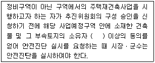
- 2분의 1
- 3분의 1
- 3분의 2
- 4분의 3
- 10분의 1
(정답률: 알수없음)
24. 집합건물의 소유 및 관리에 관한 법령상 공용부분에 관한 설명으로 옳지 않은 것은?
- 공용부분(共用部分)은 구분소유자 전원의 공유(共有)에 속한다. 다만, 일부의 구분소유자만이 공용하도록 제공되는 것임이 명백한 공용부분은 그들 구분소유자의 공유에 속한다.
- 각 공유자의 지분은 그가 가지는 전유부분(專有部分)의 면적 비율에 따른다.
- 각 공유자는 규약에 달리 정한 바가 없으면 그 지분의 비율에 따라 공용부분의 관리 비용과 그 밖의 의무를 부담하며 공용부분에서 생기는 이익을 취득한다.
- 각 공유자는 공용부분을 그 용도에 따라 사용할 수 없다.
- 공용부분의 변경이 다른 구분소유자의 권리에 특별한 영향을 미칠 때에는 그 구분소유자의 승낙과 관리단집회의 결의를 받아야 한다.
(정답률: 알수없음)
25. 민간임대주택에 관한 특별법령상 임대주택관리에 관한 설명으로 옳지 않은 것은?
- 임대사업자는 민간임대주택이 300세대 이상의 공동주택이면 주택관리업자에게 관리를 위탁하거나 자체관리하여야 한다.
- 임대사업자가 20세대 이상의 민간임대주택을 공급하는 공동주택단지에 입주하는 임차인은 임차인대표회의를 구성할 수 있다.
- 임대사업자는 특별수선충당금 적립 여부, 적립금액 등을 관할 시ㆍ도지사에게 보고하여야 한다.
- 임차인대표회의는 민간임대주택의 동별 세대수에 비례하여 선출한 대표자로 구성한다.
- 임차인대표회의는 그 회의에서 의결한 사항, 임대사업자와의 협의결과 등 주요 업무의 추진 상황을 지체 없이 임차인에게 알리거나 공고하여야 한다.
(정답률: 알수없음)
2과목: 공동주택관리실무
26. 남녀고용평등과 일ㆍ가정 양립 지원에 관한 법률에 관한 설명으로 옳지 않은 것은?
- 사업주는 근로자가 배우자의 출산을 이유로 휴가를 청구하는 경우에 5일의 범위에서 3일 이상의 휴가를 주어야 한다.
- 가족돌봄휴직 기간은 연간 최장 180일로 하며, 이를 나누어 사용할 수 있다.
- 사업주는 성희롱 예방 교육을 고용노동부장관이 지정하는 기관에 위탁하여 실시할 수 있다.
- 사업주는 사업을 계속할 수 없는 경우를 제외하고 육아휴직을 이유로 해고나 그 밖의 불리한 처우를 하여서는 아니 되며, 육아휴직 기간에는 그 근로자를 해고하지 못한다.
- 사업주는 임금 외에 근로자의 생활을 보조하기 위한 금품의 지급 또는 자금의 융자 등 복리후생에서 남녀를 차별하여서는 아니 된다.
(정답률: 알수없음)
27. 근로기준법령상 부당해고등의 구제신청에 관한 설명으로 옳지 않은 것은?
- 사용자가 근로자에게 부당해고등을 하면 근로자는 노동위원회에 구제를 신청할 수 있다.
- 노동위원회는 부당해고등이 성립한다고 판정하면 사용자에게 구제명령을 하여야 하며, 부당해고등이 성립하지 아니한다고 판정하면 구제신청을 기각하는 결정을 하여야 한다.
- 지방노동위원회의 구제명령이나 기각결정에 불복하는 사용자나 근로자는 구제명령서나 기각결정서를 통지받은 날부터 10일 이내에 중앙노동위원회에 재심을 신청할 수 있다.
- 노동위원회의 구제명령, 기각결정 또는 재심판정은 중앙노동위원회에 대한 재심 신청이나 행정소송 제기에 의하여 그 효력이 정지된다.
- 행정소송을 제기하여 확정된 구제명령 또는 구제명령을 내용으로 하는 재심판정을 이행하지 아니한 자는 1년 이하의 징역 또는 1천만원 이하의 벌금에 처한다.
(정답률: 알수없음)
28. 주택법령상 시설공사별 하자담보책임기간의 연결이 옳지 않은 것은?
- 통신ㆍ신호 및 방재설비공사 중 자동화재탐지설비공사 : 2년
- 지능형 홈네트워크 설비 공사 중 홈네트워크망 공사 : 2년
- 난방ㆍ환기, 공기조화 설비공사 중 자동제어설비공사 : 2년
- 대지조성공사 중 포장공사 : 3년
- 지붕 및 방수공사 중 홈통 및 우수관공사 : 4년
(정답률: 알수없음)
29. 주택법령상 주택관리사등의 자격을 반드시 취소해야 하는 사유에 해당하지 않는 것은?
- 거짓이나 그 밖의 부정한 방법으로 자격을 취득한 경우
- 주택관리사등이 동시에 2개 이상의 다른 공동주택단지에 취업한 경우
- 공동주택의 관리업무와 관련하여 금고 이상의 형을 선고받은 경우
- 주택관리사등이 업무와 관련하여 금품수수 등 부당이득을 취한 경우
- 다른 사람에게 자기의 명의를 사용하여 업무를 수행하게 하거나 자격증을 대여한 경우
(정답률: 알수없음)
30. 주택법령상 의무관리대상 공동주택의 관리비등에 관한 설명으로 옳지 않은 것은?
- 관리주체는 장기수선충당금에 대하여 관리비와 구분하여 징수하여야 한다.
- 관리주체는 주민운동시설, 인양기 등 공용시설물의 사용료를 해당 시설의 사용자에게 따로 부과할 수 있다.
- 관리주체는 보수를 요하는 시설이 2세대 이상의 공동사용에 제공되는 것인 경우에는 이를 직접 보수하고, 당해 입주자등에게 그 비용을 따로 부과할 수 있다.
- 관리주체는 입주자 및 사용자가 납부하는 가스사용료 등을 입주자 및 사용자를 대행하여 그 사용료 등을 받을 자에게 납부할 수 있다.
- 관리주체는 모든 거래 행위에 관하여 장부를 월별로 작성하여 그 증빙서류와 함께 해당 회계연도 종료일부터 3년간 보관하여야 한다.
(정답률: 알수없음)
31. 주택법령상 공동주택의 행위허가 또는 신고의 기준 중 허가기준을 정하고 있지 않는 것은?
- 입주자 공유가 아닌 복리시설의 용도변경
- 입주자 공유가 아닌 복리시설의 철거
- 입주자 공유가 아닌 복리시설의 대수선
- 부대시설 및 입주자 공유인 복리시설의 대수선
- 공동주택의 대수선
(정답률: 알수없음)
32. 주택법령상 의무관리대상 공동주택의 관리에 관한 설명으로 옳지 않은 것은?
- 공동주택의 입주자 및 사용자는 그 공동주택의 유지관리를 위하여 필요한 관리비를 관리주체에게 내야 한다.
- 관리주체는 공동주택의 소유권을 상실한 소유자가 관리비ㆍ사용료 및 장기수선충당금 등을 미납한 때에는 관리비예치금에서 정산한 후 그 잔액을 반환할 수 있다.
- 300세대 이상인 공동주택의 관리주체는 해당 공동주택 입주자 및 사용자의 3분의 1 이상이 서면으로 회계감사를 받지 아니하는 데 동의한 연도에는 회계감사를 받지 아니할 수 있다.
- 관리주체는 다음 회계연도에 관한 관리비등의 사업계획 및 예산안을 매 회계연도 개시 1개월 전까지 입주자대표회의에 제출하여 승인을 받아야 한다.
- 관리주체는 관리비등을 입주자대표회의가 지정하는 금융기관에 예치하여 관리하되, 장기수선충당금은 별도의 계좌로 예치ㆍ관리하여야 한다.
(정답률: 알수없음)
33. 민간임대주택에 관한 특별법령상 임대주택분쟁조정위원회의 구성에 관한 내용이다. ( )안에 들어갈 용어와 숫자를 순서대로 나열한 것은?
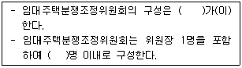
- 시ㆍ도지사, 7
- 지방자치단체의 장, 7
- 국토교통부장관, 10
- 임차인대표회장, 10
- 시장ㆍ군수ㆍ구청장, 10
(정답률: 알수없음)
34. 주택법령상 과태료 부과금액이 가장 높은 경우는? (단, 가중ㆍ감경사유는 고려하지 않음)
- 입주자대표회의의 대표자가 장기수선계획에 따라 주요시설을 교체하거나 보수하지 않은 경우
- 입주자대표회의등이 하자보수보증금을 법원의 재판 결과에 따른 하자보수비용 외의 목적으로 사용한 경우
- 관리주체가 장기수선계획에 따라 장기수선충당금을 적립하지 않은 경우
- 관리사무소장으로 배치받은 주택관리사가 시ㆍ도지사로부터 주택관리의 교육을 받지 않은 경우
- 의무관리대상 공동주택의 관리주체가 주택관리업자 또는 사업자와 계약을 체결한 후 1개월 이내에 그 계약서를 공개하지 아니하거나 거짓으로 공개한 경우
(정답률: 알수없음)
35. 공동주거관리에서 주민참여의 기능에 관한 설명으로 옳지 않은 것은?
- 관리사안 결정 및 수행에 주민의 참여가 이루어 질 때 입주자대표회의와 관리주체의 업무처리에 대한 신뢰 구축에 긍정적인 영향을 미친다.
- 주민참여는 의결결정권자인 입주자대표회의를 감독하고 관리업무수행의 주체인 관리 주체에 대하여 견제할 수 있다.
- 모든 관리사안 결정에 주민이 참여하는 경우에는 운영과정상의 효율성이 증대된다.
- 주민참여는 주민들간의 이해관계가 보다 쉽게 조정될 수 있는 기회를 부여하기도 한다.
- 주민의 개인적 견해와 자기중심적인 이해가 지나치게 반영될 경우, 주민 전체의 이익과 객관성에 문제가 생길 수 있다.
(정답률: 알수없음)
36. 주택법령상 입주자대표회의가 사업자를 선정하고 집행하는 사항은?
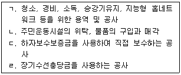
- ㄱ
- ㄷ
- ㄹ
- ㄱ, ㄴ
- ㄷ, ㄹ
(정답률: 알수없음)
37. 다음 그림의 트랩에서 각 부위별 명칭이 옳게 연결된 것은?
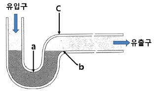
- a : 디프, b : 웨어, c : 크라운
- a : 디프, b : 크라운, c : 웨어
- a : 웨어, b : 디프, c : 크라운
- a : 크라운, b : 웨어, c : 디프
- a : 크라운, b : 디프, c : 웨어
(정답률: 알수없음)
38. 전압을 구분한 표이다. ( )안에 들어갈 숫자를 옳게 나열한 것은?
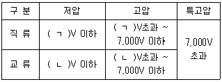
- ㄱ: 330, ㄴ: 450
- ㄱ: 660, ㄴ: 300
- ㄱ: 450, ㄴ: 600
- ㄱ: 600, ㄴ: 750
- ㄱ: 750, ㄴ: 600
(정답률: 알수없음)
39. 국가화재안전기준(NFSC)상 유도등 및 유도표지에 관한 용어의 정의로 옳지 않은 것은?
- "피난구유도등"이란 피난구 또는 피난경로로 사용되는 출입구를 표시하여 피난을 유도하는 등을 말한다.
- "피난구유도표지"란 피난구 또는 피난경로로 사용되는 출입구를 표시하여 피난을 유도하는 표지를 말한다.
- "복도통로유도등"이란 거주, 집무, 작업, 집회, 오락 그 밖에 이와 유사한 목적을 위하여 계속적으로 사용하는 거실, 주차장 등 개방된 통로에 설치하는 유도등으로 피난의 방향을 명시하는 것을 말한다.
- "계단통로유도등"이란 피난통로가 되는 계단이나 경사로에 설치하는 통로유도등으로 바닥면 및 디딤 바닥면을 비추는 것을 말한다.
- "통로유도표지"란 피난통로가 되는 복도, 계단 등에 설치하는 것으로서 피난구의 방향을 표시하는 유도표지를 말한다.
(정답률: 알수없음)
40. 지능형 홈네트워크 설비 설치 및 기술기준에서 사용하는 용어의 정의로 옳지 않은 것은?
- "집중구내통신실(TPS실)"이란 통신용 파이프 샤프트 및 통신단자함을 설치하기 위한 공간을 말한다.
- "방재실"이란 단지 내 방범, 방재, 안전 등을 위한 설비를 설치하기 위한 공간을 말한다.
- "원격검침시스템"이란 세대 내의 전력, 가스, 난방, 온수, 수도 등의 사용량 정보를 네트워크 등을 통하여 사용자에게 알려주는 시스템을 말한다.
- "월패드"란 세대 내의 홈네트워크 시스템을 제어할 수 있는 기기를 말한다.
- "원격제어기기"란 주택 내부 및 외부에서 원격으로 제어할 수 있는 기기로서 가스밸브제어기, 조명제어기, 난방제어기 등을 말한다.
(정답률: 알수없음)
41. 대변기의 세정방식 중 세정밸브식인 것은?
- 사이펀 볼텍스식
- 세락식
- 사이펀식
- 블로아웃식
- 사이펀 제트식
(정답률: 알수없음)
42. 국가화재안전기준(NFSC)상 소화기구 및 자동소화장치의 소화기 설치기준에 관한 내용이다. ( )안에 들어갈 숫자를 순서대로 나열한 것은?
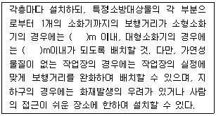
- 20, 40
- 20, 30
- 25, 30
- 25, 35
- 30, 35
(정답률: 알수없음)
43. 전기설비에 사용하는 합성수지관에 관한 설명으로 옳지 않은 것은?
- 기계적 충격에 약하다.
- 금속관보다 무게가 가볍고 내식성이 있다.
- 대부분 경질비닐관이 사용된다.
- 열적 영향을 받기 쉬운 곳에 사용된다.
- 관 자체의 절연성능이 우수하다.
(정답률: 알수없음)
44. 국가화재안전기준(NFSC)상 옥내소화전설비의 송수구 설치기준에 관한 설명으로 옳지 않은 것은?
- 지면으로부터 높이가 0.8m 이상 1.5m 이하의 위치에 설치할 것
- 구경 65mm의 쌍구형 또는 단구형으로 할 것
- 송수구의 가까운 부분에 자동배수밸브(또는 직경 5mm의 배수공) 및 체크밸브를 설치할 것. 이 경우 자동배수밸브는 배관안의 물이 잘 빠질 수 있는 위치에 설치하되, 배수로 인하여 다른 물건 또는 장소에 피해를 주지 아니하여야 한다.
- 송수구에는 이물질을 막기 위한 마개를 씌울 것
- 송수구는 소방차가 쉽게 접근할 수 있는 잘 보이는 장소에 설치하되 화재층으로부터 지면으로 떨어지는 유리창 등이 송수 및 그 밖의 소화작업에 지장을 주지 아니하는 장소에 설치할 것
(정답률: 알수없음)
45. 건물의 급수설비에 관한 설명으로 옳은 것을 모두 고른 것은?
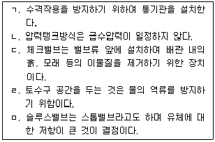
- ㄱ, ㄷ
- ㄱ, ㅁ
- ㄴ, ㄹ
- ㄴ, ㅁ
- ㄷ, ㄹ
(정답률: 알수없음)
46. 건물의 급탕설비에 관한 설명으로 옳지 않은 것을 모두 고른 것은?
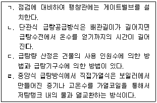
- ㄱ, ㄴ
- ㄱ, ㄹ
- ㄴ, ㄷ
- ㄱ, ㄴ, ㄹ
- ㄴ, ㄷ, ㄹ
(정답률: 알수없음)
47. 급탕배관에서 신축이음의 종류가 아닌 것은?
- 스위블 조인트
- 슬리브형
- 벨로즈형
- 루프형
- 플랜지형
(정답률: 알수없음)
48. 펌프에 관한 설명으로 옳지 않은 것은?
- 펌프의 양수량은 펌프의 회전수에 비례한다.
- 펌프의 흡상높이는 수온이 높을수록 높아진다.
- 워싱턴펌프는 왕복동식 펌프이다.
- 펌프의 축동력은 펌프의 양정에 비례한다.
- 볼류트펌프는 원심식 펌프이다.
(정답률: 알수없음)
3과목: 주택관리관계법규(주관식)
49. 주택법령상 다음의 시설로 분리된 토지는 각각 별개의 주택단지로 본다. ( )안에 들어갈 숫자를 쓰시오.
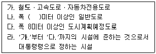
- 정답 : 20
- 주관식 문제입니다. 1번을 누르면 정답 처리 됩니다.
- 주관식 문제입니다. 1번을 누르면 정답 처리 됩니다.
- 주관식 문제입니다. 1번을 누르면 정답 처리 됩니다.
- 주관식 문제입니다. 1번을 누르면 정답 처리 됩니다.
(정답률: 알수없음)
50. 주택법 제32조(주택조합의 설립 등)에 따라 주택을 리모델링하기 위하여 주택조합을 설립하려는 경우에 필요한 결의에 관한 내용이다. ( )안에 공통적으로 들어갈 숫자를 쓰시오. (단, 분수로 쓸 것)
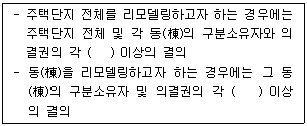
- 정답 : 2/3
- 주관식 문제입니다. 1번을 누르면 정답 처리 됩니다.
- 주관식 문제입니다. 1번을 누르면 정답 처리 됩니다.
- 주관식 문제입니다. 1번을 누르면 정답 처리 됩니다.
- 주관식 문제입니다. 1번을 누르면 정답 처리 됩니다.
(정답률: 알수없음)
51. 주택법 제9조(주택건설사업 등의 등록)와 주택법 시행령 제10조(주택건설사업자등의 범위 및 등록기준 등) 규정의 일부이다. ( )안에 들어갈 숫자를 순서대로 각각 쓰시오.
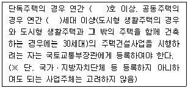
- 정답 : 20, 20
- 주관식 문제입니다. 1번을 누르면 정답 처리 됩니다.
- 주관식 문제입니다. 1번을 누르면 정답 처리 됩니다.
- 주관식 문제입니다. 1번을 누르면 정답 처리 됩니다.
- 주관식 문제입니다. 1번을 누르면 정답 처리 됩니다.
(정답률: 알수없음)
52. 주택법령상 분양가상한제 적용 지역의 지정기준에 관한 설명이다. ( )안에 들어갈 숫자를 쓰시오.
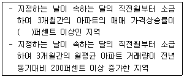
- 정답 : 10
- 주관식 문제입니다. 1번을 누르면 정답 처리 됩니다.
- 주관식 문제입니다. 1번을 누르면 정답 처리 됩니다.
- 주관식 문제입니다. 1번을 누르면 정답 처리 됩니다.
- 주관식 문제입니다. 1번을 누르면 정답 처리 됩니다.
(정답률: 알수없음)
53. 주택법 시행령 제99조(등록사업자의 주택상환사채발행) 제1항에 따라 주택상환사채를 발행할 수 있는 등록사업자에 관한 기준이다. ( )안에 들어갈 숫자를 쓰시오.
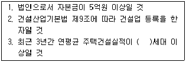
- 정답 : 300
- 주관식 문제입니다. 1번을 누르면 정답 처리 됩니다.
- 주관식 문제입니다. 1번을 누르면 정답 처리 됩니다.
- 주관식 문제입니다. 1번을 누르면 정답 처리 됩니다.
- 주관식 문제입니다. 1번을 누르면 정답 처리 됩니다.
(정답률: 알수없음)
54. 건축법령상 대지면적에 대한 연면적(대지에 건축물이 둘 이상 있는 경우에는 이들 연면적의 합계로 함)의 비율을 지칭하는 용어를 쓰시오.
- 정답 : 용적률
- 주관식 문제입니다. 1번을 누르면 정답 처리 됩니다.
- 주관식 문제입니다. 1번을 누르면 정답 처리 됩니다.
- 주관식 문제입니다. 1번을 누르면 정답 처리 됩니다.
- 주관식 문제입니다. 1번을 누르면 정답 처리 됩니다.
(정답률: 알수없음)
55. 건축법 시행령 제37조(지하층과 피난층 사이의 개방공간 설치) 규정이다. ( )안에 들어갈 숫자를 쓰시오.
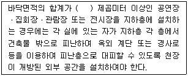
- 정답 : 3천
- 주관식 문제입니다. 1번을 누르면 정답 처리 됩니다.
- 주관식 문제입니다. 1번을 누르면 정답 처리 됩니다.
- 주관식 문제입니다. 1번을 누르면 정답 처리 됩니다.
- 주관식 문제입니다. 1번을 누르면 정답 처리 됩니다.
(정답률: 알수없음)
56. 건축법 제64조(승강기) 규정의 일부이다. ( )안에 들어갈 숫자를 쓰시오.
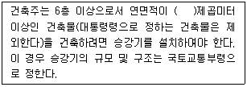
- 정답 : 2천
- 주관식 문제입니다. 1번을 누르면 정답 처리 됩니다.
- 주관식 문제입니다. 1번을 누르면 정답 처리 됩니다.
- 주관식 문제입니다. 1번을 누르면 정답 처리 됩니다.
- 주관식 문제입니다. 1번을 누르면 정답 처리 됩니다.
(정답률: 알수없음)
57. 건축법 제2조(정의) 제15호의 내용이다. ( )안에 들어갈 용어를 쓰시오.
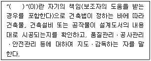
- 정답 : 공사감리자
- 주관식 문제입니다. 1번을 누르면 정답 처리 됩니다.
- 주관식 문제입니다. 1번을 누르면 정답 처리 됩니다.
- 주관식 문제입니다. 1번을 누르면 정답 처리 됩니다.
- 주관식 문제입니다. 1번을 누르면 정답 처리 됩니다.
(정답률: 알수없음)
58. 민간임대주택에 관한 특별법 제34조(토지등의 수용 등) 규정의 일부이다. ( )안에 들어갈 숫자를 순서대로 각각 쓰시오. (단, 모두 분수로 쓸 것)
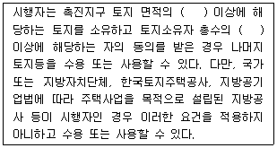
- 정답 : 2/3, 1/2
- 주관식 문제입니다. 1번을 누르면 정답 처리 됩니다.
- 주관식 문제입니다. 1번을 누르면 정답 처리 됩니다.
- 주관식 문제입니다. 1번을 누르면 정답 처리 됩니다.
- 주관식 문제입니다. 1번을 누르면 정답 처리 됩니다.
(정답률: 알수없음)
59. 공공주택 특별법 제49조(공공임대주택의 임대조건 등) 규정의 일부이다. ( )안에 들어갈 숫자를 순서대로 각각 쓰시오.
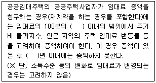
- 정답 : 5, 1
- 주관식 문제입니다. 1번을 누르면 정답 처리 됩니다.
- 주관식 문제입니다. 1번을 누르면 정답 처리 됩니다.
- 주관식 문제입니다. 1번을 누르면 정답 처리 됩니다.
- 주관식 문제입니다. 1번을 누르면 정답 처리 됩니다.
(정답률: 알수없음)
60. 공공주택 특별법 제50조의4 규정의 일부이다. ( )안에 공통적으로 들어갈 용어를 쓰시오.
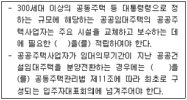
- 정답 : 특별수선충당금
- 주관식 문제입니다. 1번을 누르면 정답 처리 됩니다.
- 주관식 문제입니다. 1번을 누르면 정답 처리 됩니다.
- 주관식 문제입니다. 1번을 누르면 정답 처리 됩니다.
- 주관식 문제입니다. 1번을 누르면 정답 처리 됩니다.
(정답률: 알수없음)
61. 화재예방, 소방시설 설치ㆍ유지 및 안전관리에 관한 법률 제38조(형식승인의 취소 등) 규정의 일부이다. ( )안에 들어갈 숫자를 쓰시오.
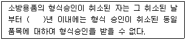
- 정답 : 2
- 주관식 문제입니다. 1번을 누르면 정답 처리 됩니다.
- 주관식 문제입니다. 1번을 누르면 정답 처리 됩니다.
- 주관식 문제입니다. 1번을 누르면 정답 처리 됩니다.
- 주관식 문제입니다. 1번을 누르면 정답 처리 됩니다.
(정답률: 알수없음)
62. 화재예방, 소방시설 설치ㆍ유지 및 안전관리에 관한 법률 제4조(소방특별조사) 규정의 일부이다. ( )안에 들어갈 용어를 쓰시오.
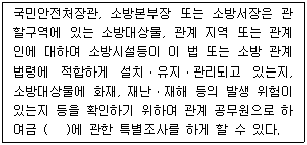
- 정답 : 소방안전관리
- 주관식 문제입니다. 1번을 누르면 정답 처리 됩니다.
- 주관식 문제입니다. 1번을 누르면 정답 처리 됩니다.
- 주관식 문제입니다. 1번을 누르면 정답 처리 됩니다.
- 주관식 문제입니다. 1번을 누르면 정답 처리 됩니다.
(정답률: 알수없음)
63. 도시 및 주거환경정비법 제29조(지정개발자의 정비사업비의 예치 등) 규정의 일부이다. ( )안에 들어갈 숫자를 쓰시오.
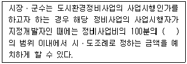
- 정답 : 20
- 주관식 문제입니다. 1번을 누르면 정답 처리 됩니다.
- 주관식 문제입니다. 1번을 누르면 정답 처리 됩니다.
- 주관식 문제입니다. 1번을 누르면 정답 처리 됩니다.
- 주관식 문제입니다. 1번을 누르면 정답 처리 됩니다.
(정답률: 알수없음)
64. 도시재정비 촉진을 위한 특별법 제26조(비용 부담의 원칙) 규정이다. ( )안에 들어갈 용어를 쓰시오.
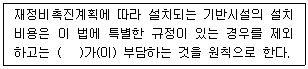
- 정답 : 사업시행자
- 주관식 문제입니다. 1번을 누르면 정답 처리 됩니다.
- 주관식 문제입니다. 1번을 누르면 정답 처리 됩니다.
- 주관식 문제입니다. 1번을 누르면 정답 처리 됩니다.
- 주관식 문제입니다. 1번을 누르면 정답 처리 됩니다.
(정답률: 알수없음)
4과목: 공동주택관리실무(주관식)
65. 주택법령상 관리주체 선정 방법에 관한 규정이다. ( )안에 들어갈 용어와 숫자를 순서대로 각각 쓰시오. (단, 숫자는 분수로 쓸 것)
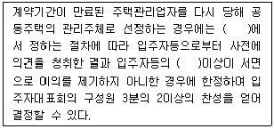
- 정답 : 관리규약, /0
- 주관식 문제입니다. 1번을 누르면 정답 처리 됩니다.
- 주관식 문제입니다. 1번을 누르면 정답 처리 됩니다.
- 주관식 문제입니다. 1번을 누르면 정답 처리 됩니다.
- 주관식 문제입니다. 1번을 누르면 정답 처리 됩니다.
(정답률: 알수없음)
66. 주택법령상 계약서의 공개에 관한 규정이다. ( )안에 들어갈 용어와 숫자를 순서대로 각각 쓰시오.
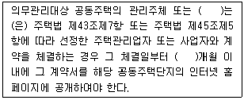
- 정답 : 입주자대표회의, 1
- 주관식 문제입니다. 1번을 누르면 정답 처리 됩니다.
- 주관식 문제입니다. 1번을 누르면 정답 처리 됩니다.
- 주관식 문제입니다. 1번을 누르면 정답 처리 됩니다.
- 주관식 문제입니다. 1번을 누르면 정답 처리 됩니다.
(정답률: 알수없음)
67. 다음에서 정의하고 있는 주택법령상의 용어를 쓰시오.
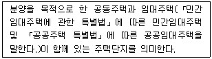
- 정답 : 혼합주택단지
- 주관식 문제입니다. 1번을 누르면 정답 처리 됩니다.
- 주관식 문제입니다. 1번을 누르면 정답 처리 됩니다.
- 주관식 문제입니다. 1번을 누르면 정답 처리 됩니다.
- 주관식 문제입니다. 1번을 누르면 정답 처리 됩니다.
(정답률: 알수없음)
68. 근로자퇴직급여보장법령상 퇴직급여제도의 설정에 관한 규정이다. ( )안에 들어갈 숫자를 순서대로 각각 쓰시오.
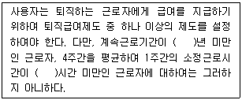
- 정답 : 1, 15
- 주관식 문제입니다. 1번을 누르면 정답 처리 됩니다.
- 주관식 문제입니다. 1번을 누르면 정답 처리 됩니다.
- 주관식 문제입니다. 1번을 누르면 정답 처리 됩니다.
- 주관식 문제입니다. 1번을 누르면 정답 처리 됩니다.
(정답률: 알수없음)
69. 민간임대주택에 관한 특별법령상 임대주택관리에 관한 규정이다. (ㄱ), (ㄴ)에 알맞은 용어를 쓰시오.
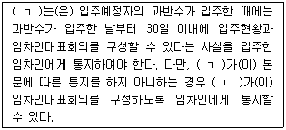
- 정답 : 임대사업자, 시장·군수·구청장
- 주관식 문제입니다. 1번을 누르면 정답 처리 됩니다.
- 주관식 문제입니다. 1번을 누르면 정답 처리 됩니다.
- 주관식 문제입니다. 1번을 누르면 정답 처리 됩니다.
- 주관식 문제입니다. 1번을 누르면 정답 처리 됩니다.
(정답률: 알수없음)
70. 주택법령상 안전점검에 관한 규정이다. ( )안에 들어갈 숫자를 순서대로 각각 쓰시오.
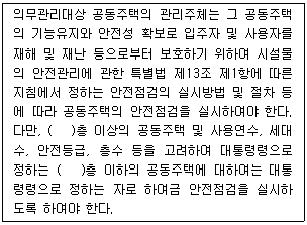
- 정답 : 16, 15
- 주관식 문제입니다. 1번을 누르면 정답 처리 됩니다.
- 주관식 문제입니다. 1번을 누르면 정답 처리 됩니다.
- 주관식 문제입니다. 1번을 누르면 정답 처리 됩니다.
- 주관식 문제입니다. 1번을 누르면 정답 처리 됩니다.
(정답률: 알수없음)
71. 주택법령상 공동주택 층간소음의 방지 등에 관한 내용이다. (ㄱ), (ㄴ)에 알맞은 용어를 쓰시오.
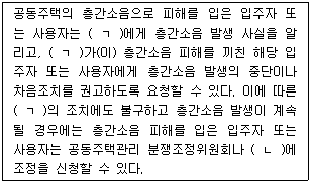
- 정답 : 관리주체, 환경분쟁조정위원회
- 주관식 문제입니다. 1번을 누르면 정답 처리 됩니다.
- 주관식 문제입니다. 1번을 누르면 정답 처리 됩니다.
- 주관식 문제입니다. 1번을 누르면 정답 처리 됩니다.
- 주관식 문제입니다. 1번을 누르면 정답 처리 됩니다.
(정답률: 알수없음)
72. 주택법령상 동별 대표자의 결격사유에 관한 규정의 일부이다. ( )안에 들어갈 숫자를 순서대로 각각 쓰시오.
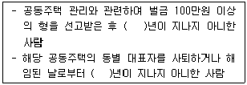
- 정답 : 5, 4
- 주관식 문제입니다. 1번을 누르면 정답 처리 됩니다.
- 주관식 문제입니다. 1번을 누르면 정답 처리 됩니다.
- 주관식 문제입니다. 1번을 누르면 정답 처리 됩니다.
- 주관식 문제입니다. 1번을 누르면 정답 처리 됩니다.
(정답률: 알수없음)
73. 어린이놀이시설 안전관리법령상 어린이놀이시설의 설치검사 등에 관한 내용이다. ( )안에 들어갈 숫자를 쓰시오.
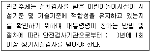
- 정답 : 2
- 주관식 문제입니다. 1번을 누르면 정답 처리 됩니다.
- 주관식 문제입니다. 1번을 누르면 정답 처리 됩니다.
- 주관식 문제입니다. 1번을 누르면 정답 처리 됩니다.
- 주관식 문제입니다. 1번을 누르면 정답 처리 됩니다.
(정답률: 알수없음)
74. 주택법령상 수직증축형 리모델링의 허용요건에 관한 내용이다. ( )안에 들어갈 숫자를 순서대로 각각 쓰시오.
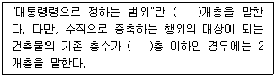
- 정답 : 3, 14
- 주관식 문제입니다. 1번을 누르면 정답 처리 됩니다.
- 주관식 문제입니다. 1번을 누르면 정답 처리 됩니다.
- 주관식 문제입니다. 1번을 누르면 정답 처리 됩니다.
- 주관식 문제입니다. 1번을 누르면 정답 처리 됩니다.
(정답률: 알수없음)
75. 공동주택 층간소음의 범위와 기준에 관한 규칙에서 층간소음의 기준 중 일부분이다. ( )안에 들어갈 숫자를 순서대로 각각 쓰시오.
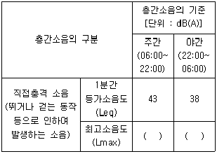
- 정답 : 57, 52
- 주관식 문제입니다. 1번을 누르면 정답 처리 됩니다.
- 주관식 문제입니다. 1번을 누르면 정답 처리 됩니다.
- 주관식 문제입니다. 1번을 누르면 정답 처리 됩니다.
- 주관식 문제입니다. 1번을 누르면 정답 처리 됩니다.
(정답률: 알수없음)
76. 다중이용시설 등의 실내공기질관리법령상 신축 공동주택의 실내공기질 측정물질들을 나열한 것이다. ( )안에 들어갈 물질을 쓰시오.
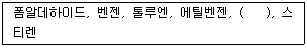
- 정답 : 자일렌
- 주관식 문제입니다. 1번을 누르면 정답 처리 됩니다.
- 주관식 문제입니다. 1번을 누르면 정답 처리 됩니다.
- 주관식 문제입니다. 1번을 누르면 정답 처리 됩니다.
- 주관식 문제입니다. 1번을 누르면 정답 처리 됩니다.
(정답률: 알수없음)
77. 1인 1일 급탕량 100리터(ℓ), 급탕온도 70℃, 급수온도 10℃, 가열능력비율 1/7, 물의 비열이 4.2kJ/㎏·K일 경우 100인이 거주하는 공동주택에서의 급탕가열능력(kW)은?
- 정답 : 100
- 주관식 문제입니다. 1번을 누르면 정답 처리 됩니다.
- 주관식 문제입니다. 1번을 누르면 정답 처리 됩니다.
- 주관식 문제입니다. 1번을 누르면 정답 처리 됩니다.
- 주관식 문제입니다. 1번을 누르면 정답 처리 됩니다.
(정답률: 알수없음)
78. 급배수설비의 배관시공에 관한 내용이다. ( )안에 들어갈 용어를 쓰시오.
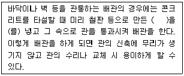
- 정답 : 슬리브(또는 덧관)
- 주관식 문제입니다. 1번을 누르면 정답 처리 됩니다.
- 주관식 문제입니다. 1번을 누르면 정답 처리 됩니다.
- 주관식 문제입니다. 1번을 누르면 정답 처리 됩니다.
- 주관식 문제입니다. 1번을 누르면 정답 처리 됩니다.
(정답률: 알수없음)
79. 건축물의 설비기준 등에 관한 규칙에서 공동주택 및 다중이용시설의 환기설비기준 등에 관한 내용이다. ( )안에 들어갈 숫자를 쓰시오.
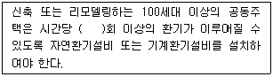
- 정답 : 0.5
- 주관식 문제입니다. 1번을 누르면 정답 처리 됩니다.
- 주관식 문제입니다. 1번을 누르면 정답 처리 됩니다.
- 주관식 문제입니다. 1번을 누르면 정답 처리 됩니다.
- 주관식 문제입니다. 1번을 누르면 정답 처리 됩니다.
(정답률: 알수없음)
80. 보일러의 정격출력에 관한 내용이다. ( )안에 들어갈 용어를 쓰시오.
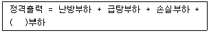
- 정답 : 예열
- 주관식 문제입니다. 1번을 누르면 정답 처리 됩니다.
- 주관식 문제입니다. 1번을 누르면 정답 처리 됩니다.
- 주관식 문제입니다. 1번을 누르면 정답 처리 됩니다.
- 주관식 문제입니다. 1번을 누르면 정답 처리 됩니다.
(정답률: 알수없음)